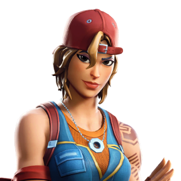
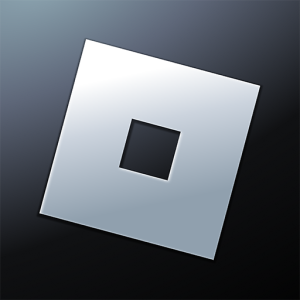
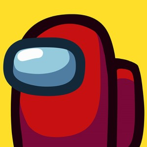

Hay Day

Hay Day é um jogo de fazenda para Android e iOS totalmente gratuito e em português. No game, você recebe um pedaço de terra como herança e precisa cuidar de plantações e animais, gerando lucro com a venda de produtos como queijo, manteiga, torta, bolo, pipoca e até roupas.
Free Fire

Free Fire é um jogo eletrônico mobile de ação-aventura do gênero battle royale, criado pela desenvolvedora vietnamita 111dots Studio e publicado pela Garena.
Fireboy & Watergirl Elements

Fireboy and Watergirl: Elements é um jogo de plataforma, no qual você terá que acompanhar os dois personagens por dentro deste templo, passando por desafios e missões fantásticas, utilizando suas habilidades especiais para ultrapassar obstáculos.
GTA

Grand Theft Auto é uma série de jogos eletrônicos criada por David Jones e Mike Dailly, sendo posteriormente gerenciada pelos irmãos Dan e Sam Houser, Leslie Benzies e Aaron Garbut.
Fortnite
Fortnite é um jogo eletrônico multijogador online revelado originalmente em 2011, desenvolvido pela Epic Games e lançado como diferentes modos de jogo que compartilham a mesma jogabilidade e motor gráfico de jogo.
Pou

Pou é um jogo em que se cria um animal de estimação virtual, desenvolvido pelo libanês Paul Salameh e lançado primeiramente para Android.
Minecraft

Minecraft é um jogo eletrônico sandbox de sobrevivência criado pelo desenvolvedor sueco Markus "Notch" Persson e posteriormente desenvolvido e publicado pela Mojang Studios, cuja propriedade intelectual foi obtida pela Microsoft em 2014.
Pac-Man

Pac-Man é um jogo eletrônico criado por Tōru Iwatani para a empresa Namco, e sendo distribuído para o mercado americano pela Midway Games
Roblox
Roblox é uma plataforma de jogos MMOSG e Sandbox baseados normalmente em mundo aberto, multiplataforma e simulação que permite criar do zero seu próprio mundo virtual chamado de 'experiência' ou 'place' onde os milhares de jogadores da plataforma podem interagir sobre.
Among Us
Among Us é um jogo eletrônico online, dos gêneros jogo em grupo e sobrevivência, desenvolvido e publicado pelo estúdio de jogos estadunidense InnerSloth.
Sonic

Sonic the Hedgehog é uma série de jogos e uma franquia multimídia japonesa criada pelo Sonic Team e produzida pela Sega. A franquia segue Sonic, cuja vida pacífica é sempre interrompida pelo antagonista principal da série, Dr. Eggman.
Subway Surfers

Subway Surfers é um jogo eletrônico de corrida interminável co-desenvolvido pela Kiloo Games, uma empresa privada com sede na Dinamarca e pela Sybo Games. Lançado em 2012, o tema do jogo é "World Tour", se passando em diversas grandes cidades do mundo.